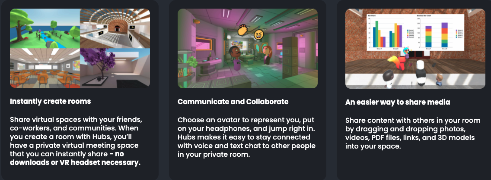
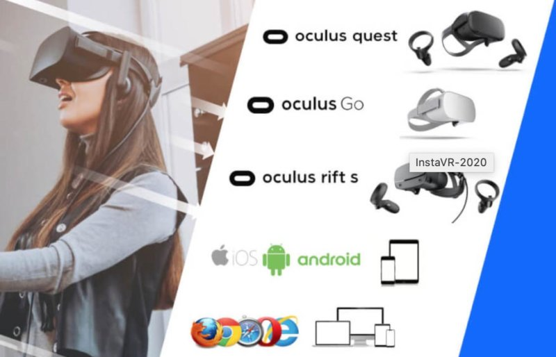
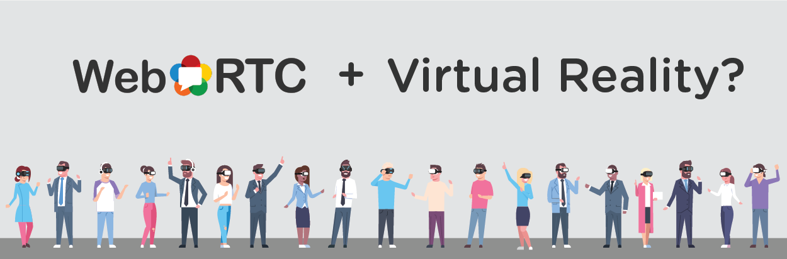

Agoraverse
A crossplatform multiuser metaverse Anytime, Anywhere, AnyDevice integration of Agora-WebSDK
Powered by the scale of SD-RTN™ low latency and high quality realtime audio & video
Enter here


